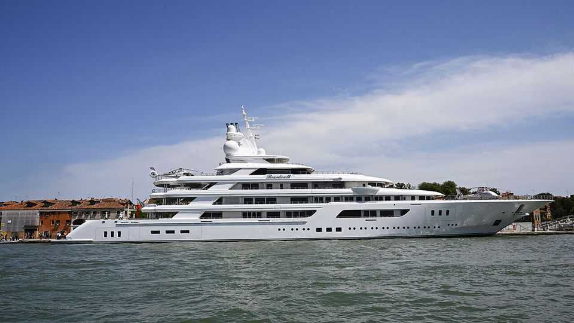

In Italy, America does business on the ambassador’s yacht
A billionaire diplomat’s floating statecraft

Jul 30th 2026
AMERICA’S EMBASSY in Rome occupies the imposing Palazzo Margherita, the former residence of an ex-queen of Italy. But this year its flashiest events have been hosted on the Boardwalk, a 117-metre superyacht. With its teak decks, twin helipads and swimming pools, spa and putting green, it is worth an estimated $450m. The owner is Tilman Fertitta, a Texan billionaire and Republican Party donor named as ambassador by Donald Trump. He has spent the summer of America’s 250th anniversary cruising the Italian coast.
Mooring off Cefalù and Sorrento, beneath an erupting Mount Etna and fireworks in Venice, the yacht has hosted receptions for politicians, business leaders and celebrities. Guests drink champagne from commemorative “Freedom 250” flutes. In Naples they included the mayor, the president of Campania and the owner of the city’s football club. In Venice the yacht arrived under the watch of helicopters and rooftop snipers, while activists staged protests against billionaire excesses.
In part, the Boardwalk is simply an extension of the ambassador’s official residence. But it also exemplifies changes in American diplomacy. Ambassadors once projected power through institutions and protocol. Under Mr Trump, personal wealth and proximity to the president are at least as important. Mr Fertitta’s businesses include restaurants, casinos, hotels and the Houston Rockets basketball team. Just as Mar-a-Lago has become an unofficial White House, the yacht has become an unofficial embassy.
Appointing rich donors rather than foreign-service officers as ambassadors is routine in America. Supporters of the practice see access to the president as crucial to the job, says Ryan Scoville of Marquette University Law School, who studies ambassadorial appointments. Critics argue that political appointees often lack the needed experience and leave much of the work to career diplomats. “A wiser appointee would keep a lower profile,” says Sir Emyr Jones Parry, a former British ambassador to NATO, “and never flash wealth ostentatiously.”
That may sound old-fashioned. Giorgia Meloni, Italy’s right-wing prime minister, has praised Mr Fertitta for helping her reconcile with Mr Trump after clashes over Iran and the pope. But Lia Quartapelle of the opposition Democrats questions whether displays of fabulous wealth make good diplomacy when Italians are struggling financially. She went to a “July 4th” party at the ambassador’s official residence. But she hasn’t been on his boat.■